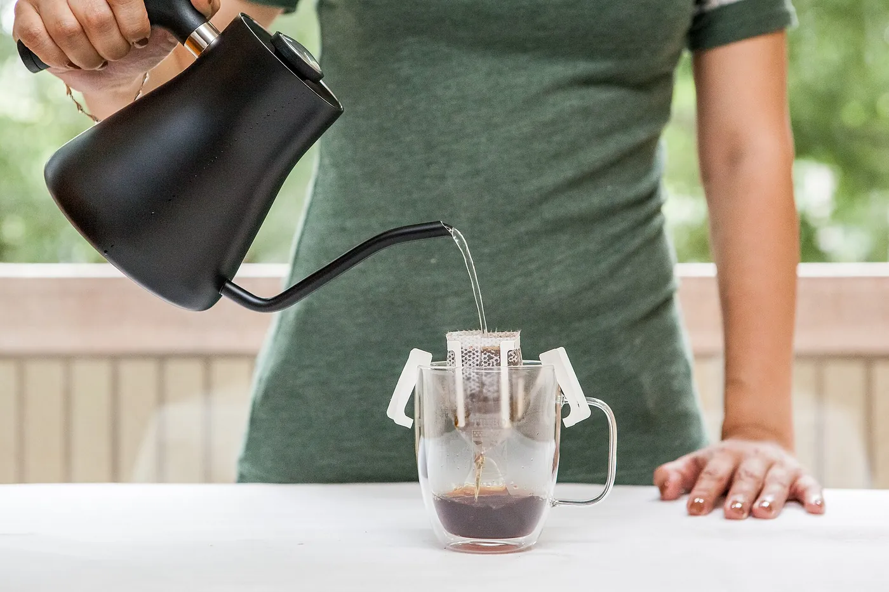
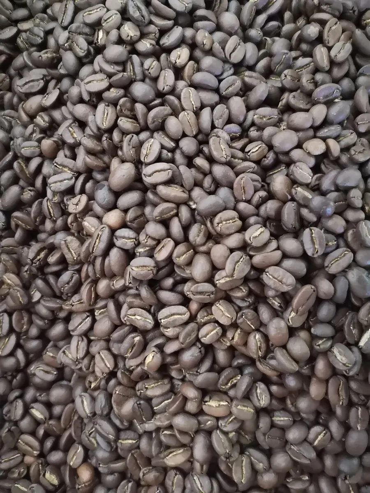
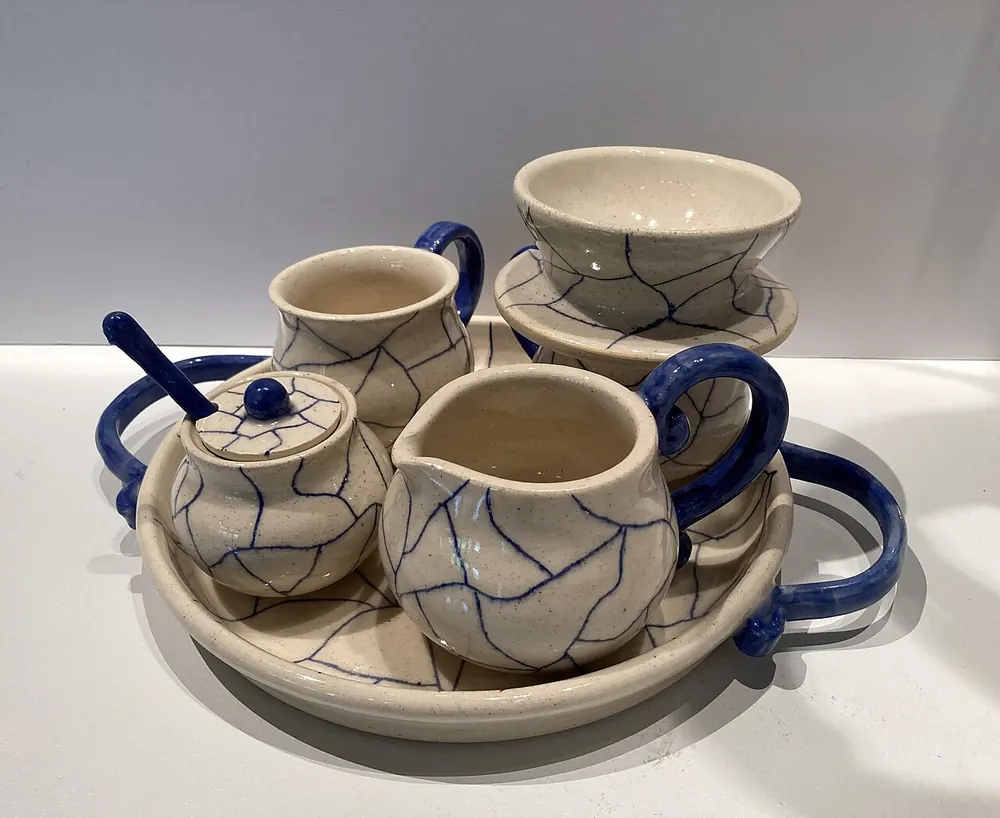

Kopi tubruk yang lambuk di tenggorokan.
Kami menyangrai sendiri tiap Rabu dan menyeduh setiap gelasnya pada pagi itu juga.

Pour over satu sachet, lama tamping satu gelas
-
Biji lokal
Arabika dari petani di dataran tinggi Gayo. Dipilih tangan, bukan mesin.
-
Disangrai mingguan
Rabu, batch kecil, dibungkus pada hari yang sama.
-
Tanpa gula tambahan
Pelarutnya air. Kalau mau susu, bilang saja ke kasir.
-
Bisa bawa pulang
Biji mentah 250 gram, di timbang sesuai kebutuhan.
Kenapa namanya lambuk
Di Aceh, kopi yang bagus sering diminum pelan, bukan buat melek. Namanya diambil dari kata lambuk yang artinya halus dan tidak bikin terganggu.
Kami tidak mengejar cita rasa yang manis dan dominan. Yang kami cari racikan yang masih terasa setelah teguk pertama, tidak hilang di mulut.
- Biji dibeli langsung dari petani, bukan dari seller tengkul
- Roasting profil rendah, supaya asamnya tidak menusuk
- Gula aren dibuat sendiri, tanpa pemanis buatan

Bagian dalam kedai
Lorong kayu, bangku panjang di jendela, dan satu meja baca di belakang. Wifi ada, colokan ada, tidak ada batas waktu.

Datang karena dekat kantor, balik lagi karena porinya tidak pelek.
Raisa pelanggan sejak 2023
Mampir, duduk sebentar
Tidak perlu pesan dulu. Ambil tempat, pesan, lalu pindah kalau mau ganti posisi.
Alamat
Jalan Tgk. H. Hasan No. 18, Lamnga, Banda Aceh
Parkir motor di depan, muat dua mobil. Halte bus di seberang jalan.
Jam buka
- Senin Jumat
- 07.00 sampai 23.00
- Sabtu Minggu
- 08.00 sampai 23.30
Paling ramai sekitar pukul 08.00. Setelah pukul 15.00 biasanya kosong.
Kontak
- 0811 2000 1234
- Surel
- halo@kopilambuk.id
- @kopilambuk
Pesan untuk dibawa pulang
Biji mentah 250 gram, disangrai khusus untuk pesananmu. Ambil di kedai atau kirim via kurir.